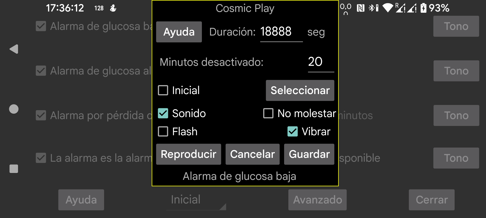

ar be de es fr hi it nl pl pt ru tr uk uz zh en
Selecciona qué tono debe reproducirse para una alarma o notificación y durante cuántos segundos.
Minutos desactivado: si una glucosa baja o alta continúa, la alarma no volverá a sonar inmediatamente. Puedes indicar al cabo de cuántos minutos debe generarse otra vez la alarma si la condición continúa.
Sonido: reproduce sonido.
Por omisión: usa el sonido por defecto.
Seleccionar: elige un tono. En algunos teléfonos Samsung, la aplicación de selección de tonos preinstalada se bloquea, así que tienes que instalar otra aplicación de tonos que pueda ser usada por otras apps, por ejemplo https://play.google.com/store/apps/details?id=com.centralparkapps.ringo.ringtones o https://apkcombo.com/ringtone-picker/de.kumpewo.ringtones.
Vibrar: vibración.
No molestar: si No molestar está activado, lo desactiva antes de reproducir una alarma. Si Juggluco no tiene el permiso necesario para ello, se te llevará a una pantalla de ajustes de Android para concedérselo. Activando No molestar y pulsando Reproducir, puedes comprobar si las alarmas funcionarán durante No molestar. En versiones anteriores de Juggluco, No molestar volvía a activarse después de la alarma. En la versión actual ya no se hace así, porque eso tenía el efecto no deseado de que, cuando una alarma sonaba durante un periodo automático de No molestar, ese estado no se desactivaba automáticamente. Si no quieres oír alarmas durante No molestar, probablemente también debas desactivar La alarma es una alarma en la pantalla anterior.
Flash: los teléfonos con linterna LED pueden hacer parpadear el flash durante el mismo número de segundos. Resulta útil cuando no se permiten tonos y no hay una política clara sobre el uso de la luz del flash.